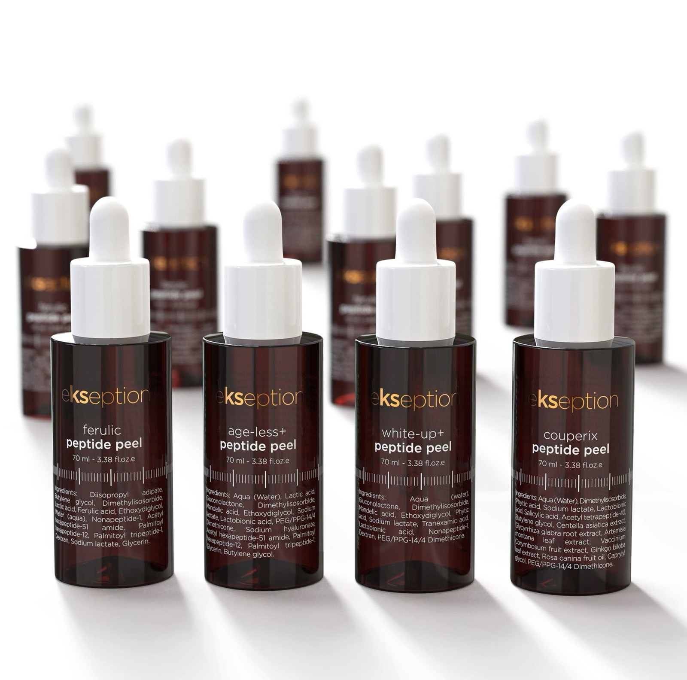

Cosmedische huidverzorging
De boutique huidstudio in Breda
Wetenschap die werkt. Care die je voelt.
Huidverjonging, huidverbetering en een diep gevoel van ontspanning. FYKI combineert kennis met de best bewezen technieken, altijd met merken waarvan de actieve ingrediënten klinisch bewezen effectief zijn.
Hoe diep werkt het?
FYKI combineert bewezen technieken tot een behandeling voor jouw huid. Kies een techniek en zie in welke huidlaag die werkt.
Peeling
Werkzame zuren vernieuwen de huid op verschillende dieptes. Ze verwijderen dode huidcellen aan het oppervlak en stimuleren in de diepere huidlagen de aanmaak van collageen en elastine.
Boek je skin-intake- Hydrodermabrasie: opperhuid
- Peeling: opperhuid tot lederhuid
- Nanoneedling: opperhuid
- LED-licht: lederhuid
- Ultrasound: lederhuid
- Microneedling: lederhuid
- Bindweefselmassage: bindweefsel
- Coagulatie: opperhuid en vaatjes
Skin-intake in vier stappen
Geen huid is hetzelfde. Daarom start je bij FYKI altijd met een uitgebreide huidanalyse, zodat er een behandelplan op maat ontstaat.
-
Stap 1
Intake
Vooraf krijg je een uitgebreid intakeformulier per mail. Leefstijl, stress, voeding, medicatie en allergieën kunnen je huid beïnvloeden.
-
Stap 2
Huidanalyse
Alle huidlagen worden beoordeeld, onder andere met palpatie: huidtype, gevoeligheid, de status van je huidbarrière en je huidconditie.
-
Stap 3
Eerste behandeling
Direct op maat, bijvoorbeeld een dubbele reiniging, bindweefselmassage, een peeling of lichttherapie. Je krijgt een duidelijk plan voor vervolgbehandelingen.
-
Stap 4
Productadvies en thuiszorg
Nazorginstructies krijg je persoonlijk en per mail. Thuis werk je verder met producten uit dezelfde lijn als in de studio.
Liever eerst een vraag stellen? Stuur een WhatsApp.
Meest geboekt
FYKI's meest populaire cosmedische huidbehandelingen.
Skin-intake
BoekJe huid wordt grondig geanalyseerd, je wensen en doelen worden besproken en je krijgt meteen een behandeling op maat.
The signature ritual
BoekThe supreme anti-age
BoekMicroneedling met exosomen
BoekUltrafijne naaldjes maken microkanaaltjes in de huid, met skinboosters die o.a. peptiden, hyaluronzuur en exosomen bevatten.
Prijzen? Cosmedische huidverzorging is persoonlijk: tijdens de skin-intake stel je samen het juiste behandelplan op.
Een moment voor jezelf
Bij FYKI betekent huidverbetering meer dan zichtbare resultaten. In elke behandeling zit een gedeelte ontspanning. Met de add-on ‘ritual’ voeg je een extra verwenmoment toe, zodat je huid de beste zorg krijgt terwijl jij geniet van ongestoorde me-time.
Geen huidprobleem, maar zin in een klassieke verwenbehandeling? Boek dan The Ritual.

Wetenschap en merken
FYKI werkt met cosmeceuticals: actieve, klinisch bewezen ingrediënten in hogere concentraties, die de huid zelf aan het werk zetten.
Ekseption
Organische peelings die dieper in de huid werken, met minder kans op vervelling of roodheid. Het eerste merk dat hyaluronzuur en peptiden in peelings combineert.
Fusion Meso
Aesthetic Medical Skincare voor professionals. De formules worden ontwikkeld en getest in eigen laboratoria en bevatten alleen klinisch bewezen werkstoffen.
Beide merken zijn ontwikkeld door een team van artsen, farmaceuten en biochemici met jaren ervaring in de esthetiek.
Maatwerk
Nooit standaardprotocollen. Elke behandeling is afgestemd op je huidconditie en doelen op dat moment.
Huidbarrière eerst
Een sterke barrière is de basis van huidverbetering. Daarom doseren we slim en bouwen we rustig op.
Combinatiekrachten
Peelings, mesotherapie, lichttherapie, needling en ultrasound worden doordacht gecombineerd.
Gebaseerd op wetenschap
Alleen ingrediënten en technieken waarvan de werking écht bewezen is.
Duurzaam resultaat
We werken in fases, monitoren je progressie en sturen bij, zodat verbetering blijvend is.
Self-care
Huid, lichaam en geest komen tot rust. Een moment waarin alles even om jou draait.
Wat klanten zeggen
5,0
18 Google-reviews
- Eerst een consult
- Zorgvuldige huidanalyse en een plan
- Ontspannen behandelingen, zichtbaar resultaat
“Zó genoten! Een uur pure ontspanning en mijn huid ziet er zó fris en stralend uit. Ik kan niet wachten om thuis verder te gaan met de fijne producten…”
Margriet (58 jaar)
“Alles wordt duidelijk uitgelegd. Ik snap eindelijk wat er met mijn huid gebeurt. Elke behandeling wordt aangepast op hoe mijn huid op dat moment is…”
Rozemarijn (35 jaar)
Maak een afspraak
Boek je skin-intake direct online, of stuur een WhatsApp. Je vindt FYKI aan de Nieuwe Ginnekenstraat in Breda.
- Adres
- Nieuwe Ginnekenstraat 39B
4811 NN Breda - Bellen / WhatsApp
- 06 82 89 58 71
- info@fykiskinstudio.nl
- Open
- ma t/m vr11:00–19:00
- za en zogesloten
- @fykiskinstudio